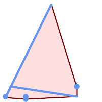

Name
ST_ConvexHull — ジオメトリの凸包を計算します。
Synopsis
geometry ST_ConvexHull(geometry geomA);
説明
ジオメトリの凸包を計算します。凸包は、入力ジオメトリのすべてを囲む最小の凸ジオメトリです。
凸包は、ジオメトリの集合に輪ゴムをかけて得られるジオメトリと見ることができます。これは「真空パック」に似ている凹包と異なります。凸包は観察ポイントの集合に基づいて、響を受けた領域を決定するために、しばしば使われます。
凸包は一般的にポリゴンです。二つ以上の同一線上のポイントの凸包は、2点のラインストリングになります。一つ以上の同一ポイントの凸包はポイントです。
集約関数ではありません。ジオメトリ集合の凸包を計算するには、ジオメトリ集合をジオメトリコレクションに集約するST_Collectを使います (ST_ConvexHull(ST_Collect(geom))等)。
GEOSモジュールで実現しています。
 This method implements the OGC Simple Features
Implementation Specification for SQL 1.1. s2.1.1.3
This method implements the OGC Simple Features
Implementation Specification for SQL 1.1. s2.1.1.3
This method implements the SQL/MM specification. SQL-MM IEC 13249-3: 5.1.16
This function supports 3d and will not drop the z-index.
例

マルチラインストリングとマルチポイントの凸包
SELECT ST_AsText(ST_ConvexHull(
ST_Collect(
ST_GeomFromText('MULTILINESTRING((100 190,10 8),(150 10, 20 30))'),
ST_GeomFromText('MULTIPOINT(50 5, 150 30, 50 10, 10 10)')
)) );
---st_astext--
POLYGON((50 5,10 8,10 10,100 190,150 30,150 10,50 5))
ST_Collectを使ってジオメトリ集合の凸包を計算します。
-- 観測ポイントに基づく感染面積の推定
SELECT d.disease_type,
ST_ConvexHull(ST_Collect(d.geom)) As geom
FROM disease_obs As d
GROUP BY d.disease_type;